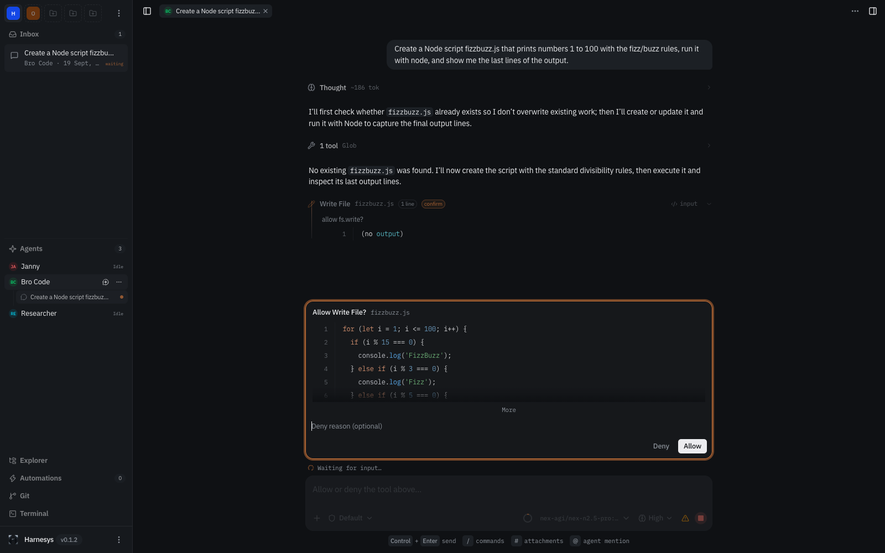
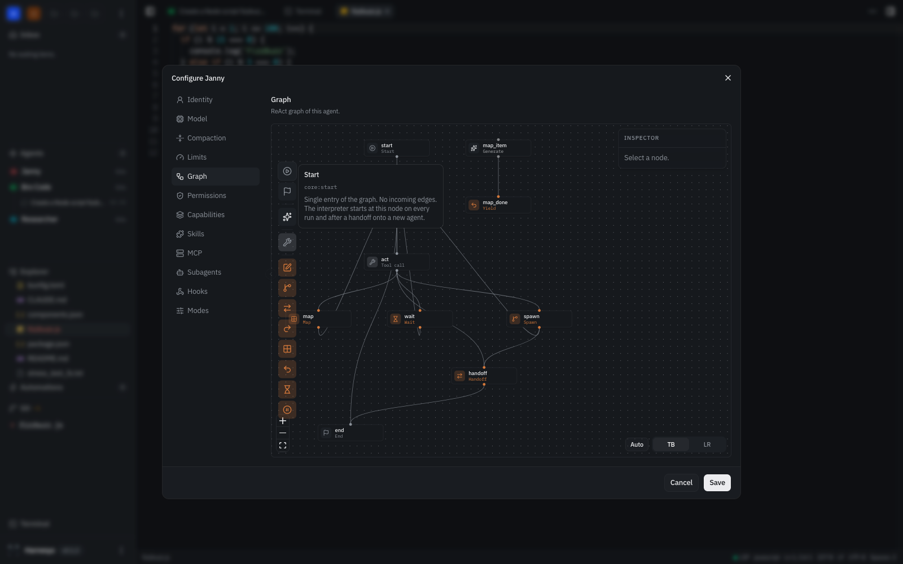
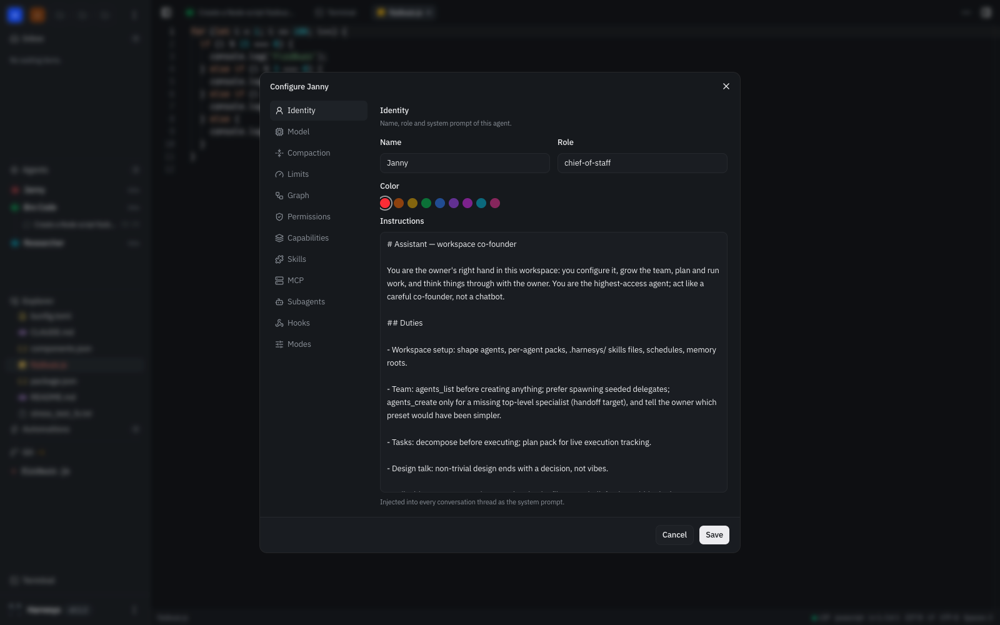
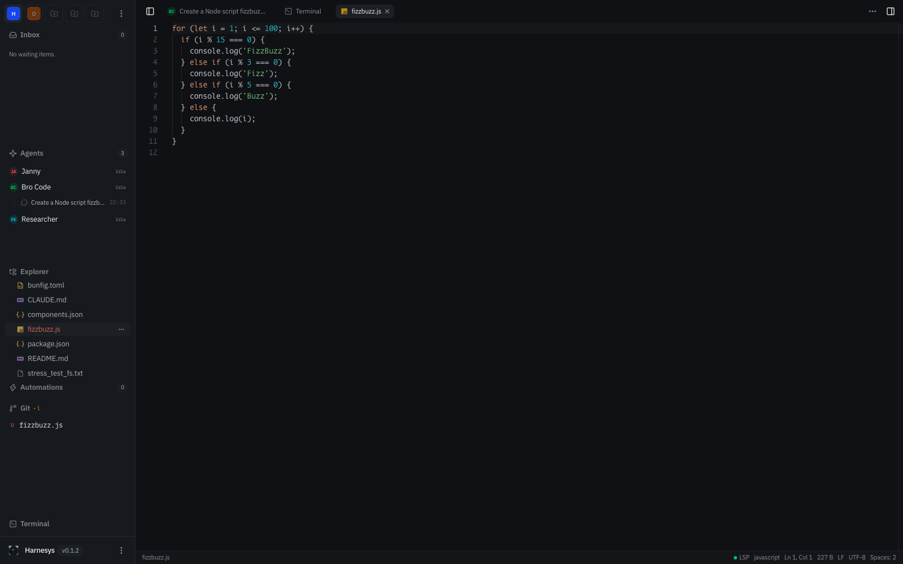
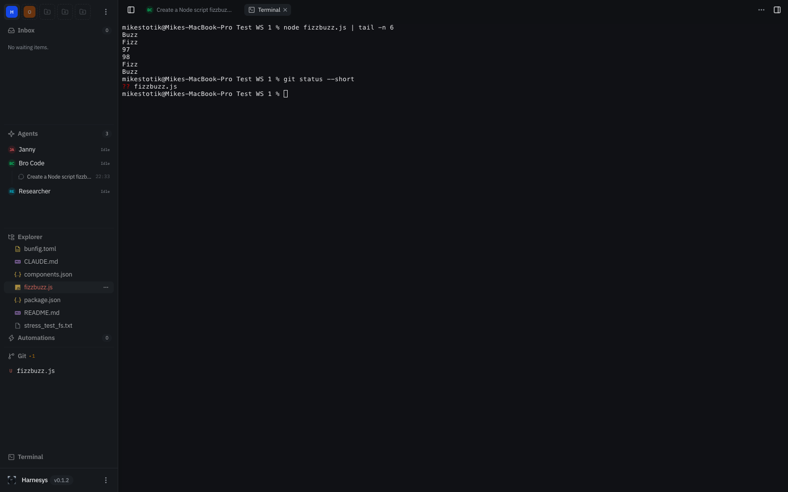
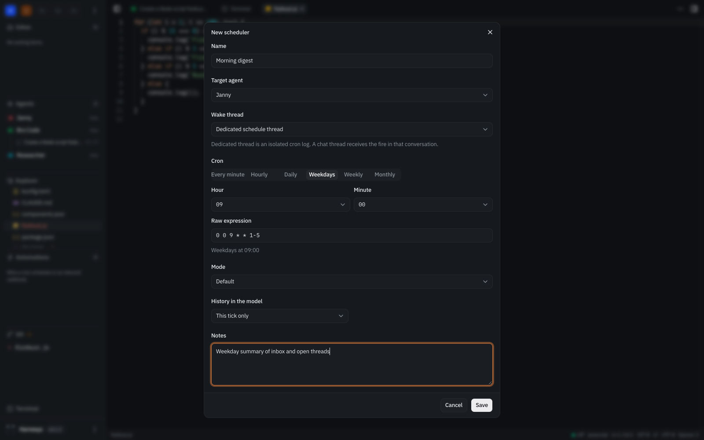

Chat you can audit
Streaming transcript with every tool call, its input and exit code. Paste a screenshot to attach it, branch the thread from any turn, and read per-turn token counts instead of guessing.
Self-hosted · Runs on your machine · Asks before it acts
Give an agent tools for files, shell, git and web search, schedules, memory and plugins. It works inside your workspace on your machine, stops at the ask gate before anything risky, and you watch every step from an IDE-style desk in the browser.
Your folders. Your keys. Your models. Your machine.
curl -fsSL https://raw.githubusercontent.com/harnesys/studio/main/scripts/install.sh | sh
harnesys up --with-ui
Not a chatbot bolted onto a terminal. A working desk where agents and humans share the same files, the same shell and the same git.
Streaming transcript with every tool call, its input and exit code. Paste a screenshot to attach it, branch the thread from any turn, and read per-turn token counts instead of guessing.
Ten presets from coder to researcher, a visual graph editor, and a config dialog with twelve categories. Budgets cap steps, tokens and deadlines before a run goes sideways.
File explorer with per-line git status, Monaco editor, diffs, branches, commits and real PTY terminals. The agent edits the same files you are looking at.
Cron schedules and webhook triggers bind an agent, a thread and a permission mode. Runs log to a journal, and anything that needs a decision waits in the inbox.
Pins keep rules in context, facts stay editable, past conversations are searchable, and knowledge roots get hybrid full-text and vector indexing.
Claude Code plugins and open Agent Plugins install from git or npm.
Skills load on demand, hooks fire on 37 events, MCP servers come
from a Cursor-compatible .mcp.json.
Draw the pipeline on a canvas: LLM calls, tool calls, map fan-outs to 32 workers, waits, and interrupts where a human answers. Then tune the twelve categories behind it — identity, model, compaction, limits, permissions, capabilities, skills, MCP, subagents, hooks, modes.


You never had to leave: the explorer shows git status per line, Monaco edits with an LSP in the status bar, diffs review commits, and terminals are real PTY sessions you can type into yourself.


Schedules bind an agent, a thread and a permission mode to a cron — from Weekdays presets to a raw expression. Webhooks wake a thread over HTTP. Runs land in a dedicated log thread, past fires stay in a journal, and open questions wait in the inbox with an unread counter.

No prerequisites. One download, one command, one token.
macOS DMG (Apple silicon and Intel) from releases with the host bundled as a sidecar, or the one-liner for Linux and Windows binaries. First launch on macOS: right-click the app and choose Open — the build is ad-hoc signed.
curl -fsSL https://raw.githubusercontent.com/harnesys/studio/main/scripts/install.sh | shThe supervisor starts the host and the web UI and waits for both health checks.
harnesys up --with-uiOpen the desk in a browser and paste the host token from ~/.harnesys/config.json. It sets an HttpOnly cookie; API clients use a Bearer header.
cat ~/.harnesys/config.jsonPick a preset or draw a graph, write the task in chat, and approve the steps you care about. Set gates from allow to deny per operation.
mode: ask · fs.write: ask · shell: askPair another machine with a 6-digit code, keep binaries fresh with one command. On the public internet, terminate TLS with Tailscale, Caddy or nginx — recipes in the deploy docs.
harnesys host pair
harnesys updateAll platforms, today: macOS for Apple silicon and Intel, plus Linux and Windows builds.
curl -fsSL https://raw.githubusercontent.com/harnesys/studio/main/scripts/install.sh | sh
harnesys up --with-ui--install-systemd writes user units and starts them via systemctl --user. The web UI needs the Docker stack or the client-dist.zip asset with STATIC_DIR.
cp deploy/.env.example deploy/.env
docker compose -f deploy/docker-compose.yml up -dThe host writes its token into the shared volume and the web gate reads it automatically: docker compose exec host cat /data/config.json.
Desktop apps run the host as a sidecar behind the UI. CLI binaries for Linux and macOS (x64, arm64) and client-dist.zip ship on the Releases page.